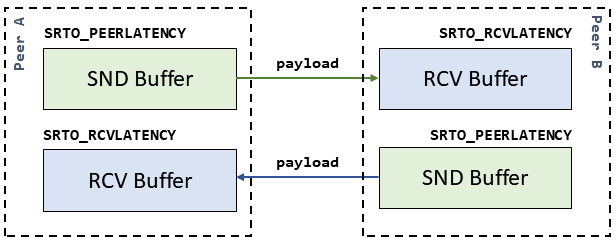

Latency Negotiation
SRT connection provides a bidirectional transmission channel. Therefore, there are two buffering latencies (delays): one in each direction.
SRT allows to configure both latencies independently using
SRTO_RCVLATENCY
and SRTO_PEERLATENCY
socket options. For simplicity, SRTO_LATENCY
can be used to configure both latencies at once.
Live Streaming Configuration Only
Please note that buffering delay is applied only in Live Streaming configuration whith TSBPD enabled.
Let's assume Peer A is the local side on which those socket options are set. Peer B is the remote peer with which Peer A is establising a connection.
SRTO_RCVLATENCY is the buffering delay of the Peer A for all the payload it receives.
SRTO_PEERLATENCY is the buffering delay of the remote Peer B for all the payload it will receive from Peer A.
Peer A uses this delay when sending the payload to decide if it still makes sense to re-transmit a lost packet (see the TL Packet Drop Section of SRT RFC).
The same applies relative to Peer B. SRTO_RCVLATENCY is the latency applied on the incoming payload, SRTO_PEERLATENCY is the latency in the direction of sending towards Peer A.
Buffering Delay of the Peer
SRTO_PEERLATENCY is the receiver buffering latency SRTO_RCVLATENCY of the peer.

The negotiated latency is the maximum of SRTO_RCVLATENCY and SRTO_PEERLATENCY pair.
Peer A SRTO_RCVLATENCY_NEGOTIATED = max(PEER_A_SRTO_RCVLATENCY; PEER_B_SRTO_PEERLATENCY).
Peer A SRTO_PEERLATENCY_NEGOTIATED = max(PEER_A_SRTO_PEERLATENCY; PEER_B_SRTO_RCVLATENCY).
Peer B SRTO_RCVLATENCY_NEGOTIATED = max(PEER_B_SRTO_RCVLATENCY; PEER_A_SRTO_PEERLATENCY).
Peer B SRTO_PEERLATENCY_NEGOTIATED = max(PEER_B_SRTO_PEERLATENCY; PEER_A_SRTO_RCVLATENCY).
Configured Latency (Before Connection)
Set SRT socket options before the connection, and see the negotiated latency after connection is established.